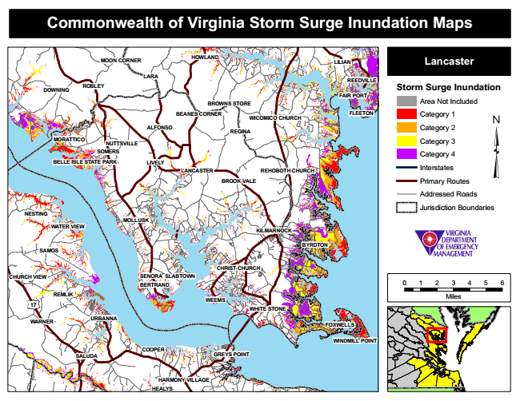

Commonwealth of Virginia Storm Surge Inundation Maps
MOON CORNER
HOWLAND
Lancaster
Storm Surge Inundation
Area Not Included
FLEETON
Category 1
Category 2
Category 3
Category 4
Interstates
Primary Routes
Addressed Roads
Jurisdiction Boundaries
0 1 2 3 4 5 6
Miles
GREYS POINT
LILIAN
LARA
WEEMS
HEALYS
REEDVILLE
DOWNING
ROBLEY
MORATTICO
LANCASTER
BYRDTON
REMLIK
FAIR PORT
WATER VIEW
BROWNS STORE
BEANES CORNER
WICOMICO CHURCH
ALFONSO
REGINA
NUTTSVILLE SOMERS
BELLE ISLE STATE PARK
LIVELY
REHOBOTH CHURCH
KILMARNOCK
CHRIST CHURCH SENORA
SLABTOWN
17
FOXWELLS
WINDMILL POINT
SALUDA
HARMONY VILLAGE
BROOK VALE
NESTING
MOLLUSK
SAMOS
CHURCH VIEW
WHITE STONE
WARNER
BERTRAND
URBANNA
COOPER